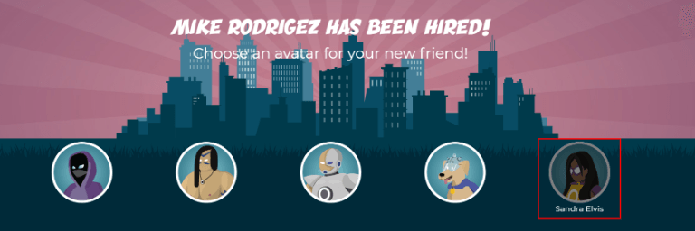

Referencias¶
La aplicación Referencias de Odoo es un lugar centralizado donde se aloja toda la información relativa a los referidos, desde los puntos ganados, los compañeros contratados y las recompensas seleccionadas. Los usuarios pueden recomendar a personas que conocen para puestos de trabajo, y luego ganar puntos de referencia a medida que esas personas progresan a través del proceso de contratación. Una vez ganados suficientes puntos de recomendación, pueden canjearse por premios. La aplicación Referrals se integra con las aplicaciones Empleados, Reclutamiento y Sitio web, que deben estar instaladas para que la aplicación Referencias funcione.
La única configuración necesaria en la aplicación Referencias después de instalarla son las recompensas, lo demás ya está configurado.
Cualquier usuario con permisos de usuario de recomendación, encargado o administrador en la aplicación Reclutamiento tiene acceso a la aplicación Referencias. Solo los usuarios con permisos de administrador en la aplicación Reclutamiento tienen acceso a los menús de reportes y de configuración. Consulte la siguiente documentación para obtener más información sobre usuarios y permisos de acceso: Usuarios y Permisos de acceso.
Incorporación¶
Al abrir la aplicación Referencias por primera vez, aparece un guión de inicio preconfigurado. Se trata de cuatro diapositivas, cada una explica las diferentes partes de la aplicación Referencias. En la parte superior del guión, se muestra el siguiente mensaje a lo largo de todas las diapositivas de incorporación: ¡Reúna a su equipo! Programa de referencias laborales. Detrás de este mensaje principal hay una imagen, y debajo de ella algo más de texto explicativo.
Cada una de las diapositivas de capacitación tiene su correspondiente imagen y mensaje que se muestra. Después de leer cada mensaje, haga clic en el botón Siguiente para avanzar a la siguiente diapositiva.
El texto aparece en cada diapositiva como se muestra:
¡Oh no! ¡Los villanos llegaron a la ciudad! Ayúdanos a reclutar a un equipo de superhéroes que nos salven.
Mira los puestos de trabajo que estamos buscando, anúncialas en redes sociales o refiere a tus amigos.
Colecte puntos e intercámbielos por regalos de la tienda.
¡Compite con tus colegas para crear la mejor liga de la justicia!
Nota
Las diapositivas de capacitación aparecerán cada vez que se abra la aplicación Referencias, hasta que se hayan visto todas las diapositivas y se haya hecho clic en el botón Empezar ahora. Si se sale de la capacitación en cualquier momento, o si no se ha hecho clic en el botón Empezar ahora, las diapositivas del onboarding comenzarán de nuevo cuando se abra la aplicación Referencias. Una vez que se haya hecho clic en el botón Empezar ahora, las diapositivas de capacitación no se volverán a ver, y el panel principal se cargará cuando se abra la aplicación Referrals a partir de ese momento.
En cualquier momento durante la integración, puede hacer clic en el botón Saltar. De este modo se sale de la navegación y se carga el panel principal de Referencias. Si hace clic en Saltar, las diapositivas de capacitación ya no se cargarán al abrir la aplicación Referencias.

Nota
Si hay algún candidato contratado que el usuario haya referido antes de que usted haya configurado la aplicación de Referencias (lo que significa que las diapositivas de capacitación no han aparecido antes), cuando se hace clic en Empezar ahora al final de la capacitación, en lugar de ir al panel principal, aparece una pantalla contratado.
Modificar las plantillas de capacitación¶
Las diapositivas de incorporación pueden modificarse si se desea. Sólo los usuarios con derechos Administrador para la aplicación de Reclutamiento pueden modificar las diapositivas de onboarding. Para editar una diapositiva, vaya a Cada línea muestra el texto de la diapositiva individual de capacitación. Para editar una diapositiva de incorporación, haga clic en la línea de una diapositiva individual para abrir el formulario de incorporación de la diapositiva y, a continuación, haga clic en Editar.
Modifique el mensaje en la casilla Texto. Para cambiar el orden en que aparecen las diapositivas en el onboarding, puede modificar la Secuencia. Escriba el número correspondiente para indicar el orden en que deben mostrarse las diapositivas. Se puede seleccionar una Empresa, sin embargo, si se rellena este campo, esa diapositiva sólo se mostrará para esa empresa en concreto.
La imagen tambi√©n puede modificarse. Pase el rat√≥n sobre la miniatura de la imagen en la esquina superior derecha del formulario y aparecerán los iconos ‚úèÔ∏è (lápiz) y üóëÔ∏è (basura). Pulse el icono ‚úèÔ∏è (lápiz) para cambiar la imagen. Aparecerá una ventana con un navegador de archivos donde podrá seleccionar la imagen deseada, haga clic en Abrir. La nueva imagen aparece en la miniatura. Para eliminar una imagen, haga clic en el icono üóëÔ∏è (basura) y, a continuaci√≥n, seleccione una nueva imagen utilizando el icono ‚úèÔ∏è (lápiz).
Para guardar los cambios, haga clic en Guardar o en Descartar para borrar los cambios y regresar al contenido original.

El orden de las diapositivas también se puede cambiar directamente en el panel de control de Incorporación, sin tener que editar una diapositiva individual de Incorporación. Haga clic en el símbolo de flecha arriba y abajo que aparece después de la casilla de verificación y antes del texto de la diapositiva, y arrastre la diapositiva a la posición deseada. La etiqueta Secuencia cambia automáticamente en todos los formularios de incorporación de la diapositiva, reflejando la nueva secuencia.

Referencias contratadas¶
Cuando se contrata a un candidato que el usuario refirió, el usuario «hace que su equipo de superhéroes sea más grande» y se agregará un avatar de superhéroe en el tablero de Referencias.
Después de contratar a un referido, cuando el usuario vuelve a abrir la aplicación Referidos, en lugar del panel principal, se carga una página de contratados, donde aparecerá el texto ¡(Nombre del Referido) ha sido contratado! ¡Elige un avatar para tu nuevo amigo!
Debajo de este mensaje hay cinco miniaturas de avatar para elegir. Si ya se ha asignado un avatar a una referencia, la miniatura aparecerá en gris y debajo del avatar se mostrará el nombre de la referencia para la que que se ha elegido el avatar. Haga clic en un avatar disponible para seleccionarlo.
Si se ha contratado a más de un referido desde que se abrió la aplicación Referidos, después de seleccionar el primer avatar, se pide al usuario que seleccione otro avatar para el siguiente referido contratado. Una vez que todos los avatares se hayan seleccionado, el tablero se cargará y todos los avatares serán visibles. Pase el ratón sobre cada avatar y su nombre aparecerá encima de ellos.
Modificar amigos¶
Es posible realizar cambios en los avatares de sus amigos del mismo modo que modifica los niveles. Solo los usuarios con permisos de administrador en la aplicación Reclutamiento pueden realizar modificaciones en los amigos. Los amigos preconfigurados son visibles y se pueden modificar desde . El avatar de cada amigo aparece en la columna Imagen del tablero y el nombre correspondiente aparece en la columna Nombre del amigo. Las imágenes predeterminadas son un grupo diverso de héroes, que van desde robots hasta perros.
Para modificar la imagen del panel de control, la miniatura, el nombre o la posición de un amigo, haga clic en un amigo individual para abrir el formulario del amigo recomendado. Haga clic en Editar para realizar modificaciones. Escriba el nombre en el campo Nombre del amigo, esto sirve únicamente para diferenciar a los amigos en el menú de configuración. El nombre del amigo no es visible en ningún otro lugar de la aplicación Referidos.
La posición puede establecerse como adelante o atrás. Esto determina la posición del amigo en relación con el avatar del superhéroe del usuario. Haga clic en el botón de opción situado junto a la selección deseada y el amigo aparecerá delante o detrás del avatar del usuario cuando se active.
Si lo desea, puede modificar tanto la imagen de la miniatura como la imagen del tablero. Pase el rat√≥n por encima de la imagen que desea sustituir para ver los iconos ‚úèÔ∏è (lápiz) y üóëÔ∏è (cubo de basura). Haga clic en el icono ‚úèÔ∏è (lápiz) y aparecerá una ventana del explorador de archivos. Navegue hasta el archivo de imagen deseado y haga clic en Abrir para seleccionarlo.
Ya que realice los cambios, haga clic en el botón Guardar para guardar los cambios, o haga clic en Descartar para borrar los cambios y regresar a la información original.

Advertencia
No se aconseja editar las imágenes. El archivo de la imagen debe tener un fondo transparente para que se muestre correctamente. Solo los usuarios con conocimientos en imágenes transparentes pueden intentar ajustar cualquier imagen en la aplicación Referrals.
Una vez que se ha cambiado una imagen y se ha guardado el amigo, no es posible volver a la imagen original. Para volver a la imagen original, es necesario desinstalar y volver a instalar la aplicación Referencias.
Puntos de referencias¶
El programa de referidos se basa en obtener puntos que luego se canjean por recompensas. En el panel principal de la aplicación Referencias la parte superior muestra un resumen de los puntos actuales del usuario. La parte izquierda del resumen muestra el total de puntos ganados, y la parte derecha muestra los puntos que están disponibles para gastar.
Para ver las distintas referencias y los puntos ganados por cada una, haga clic en uno de los botones situados justo debajo de los avatares. Las opciones son Referencias, En proceso y Exitoso.
Sobre el botón En proceso aparece el número actual de referencias que siguen activas en el proceso de selección y que aún no se han contratado o rechazado. El número de referencias que se contrataron aparece encima del botón Exitoso. El número total de referencias (tanto las referencias en curso como las exitosas combinadas) aparece encima del botón Referencias.
Nota
Para ver las referencias asociadas a cada una de las categorías, Referencias, En curso y Exitoso, haga clic en el botón correspondiente. Se mostrarán todas las referencias de esa categoría específica.
Mis referencias¶
Para ver todas las referencias (tanto en curso como exitosas) haga clic en el botón Referencias y aparecerá una ventana Mis referencias. Esta pantalla muestra todas las referencias, con cada una de ellas en su propia tarjeta de referencia.
Una recomendación exitosa tiene una línea verde en el lado izquierdo de la tarjeta y muestra una imagen ✓ Contratado en la esquina superior derecha de la tarjeta. Las referencias que están en proceso muestran una imagen En proceso en la esquina superior derecha de la tarjeta.
En cada tarjeta de recomendación figura el nombre del candidato, el departamento en el que se encuentra el puesto de trabajo, el nombre del puesto, la persona responsable de contratarlo (reclutador) y los puntos obtenidos.
Puntos¶
Los puntos que se pueden obtener por una recomendación son los mismos para todos los puestos de trabajo. A cada etapa del proceso de reclutamiento se le asignan puntos correspondientes. Las etapas enumeradas corresponden a las etapas configuradas en la aplicación Reclutamiento.
En cada tarjeta de referencia individual, debajo de los puntos ganados hay un gráfico de barras que muestra cuántos puntos se han ganado de los puntos totales posibles que se pueden ganar si el solicitante es contratado.
Debajo del gráfico de barras hay una lista de las distintas etapas de contratación y los puntos obtenidos cuando la referencia pasa a esa etapa. Si se ha alcanzado una etapa y se han ganado los puntos, aparece una marca de verificación verde junto a la etapa.
Example
La estructura de puntos pre configurados para referencias es:
Calificación inicial: 1 punto.
Primera entrevista: 20 puntos.
Segunda entrevista: 9 puntos.
Propuesta de contrato: 5 puntos.
Contrato firmado: 50 puntos.
El total de puntos ganados por un referido que es contratado es de 85 puntos. Para modificar los puntos que se obtienen en cada etapa se realiza en la aplicación Reclutamiento. Consulte la documentación de Reclutamiento para modificar los puntos de cada etapa.
Recompensas¶
Crear recompensas¶
Las recompensas son las únicas configuraciones necesarias cuando se configura la aplicación de Referidos. Sólo los usuarios con derechos de Administrador para la aplicación de Reclutamiento pueden crear o modificar recompensas. Para añadir recompensas, vaya a . Haga clic en Crear y se cargará un formulario de recompensas. Introduzca la siguiente información en el formulario:
Nombre del producto: ingrese el nombre como debe aparecer en la recompensa.
Costo: ingrese cuántos puntos se necesitan para obtener la recompensa.
Empresa: seleccione la empresa para la que aparecerá la recompensa en el menú desplegable. Si una recompensa se va a utilizar para varias empresas, cada empresa debe tener un registro de la recompensa con la empresa indicada en el formulario.
Responsable del regalo: seleccione la persona que será responsable de adquirir y entregar la recompensa al destinatario en el menú desplegable. Esta persona recibe una alerta cuando se adquiere la recompensa, para que sepa cuándo debe entregarla al destinatario.
Descripción: escriba la descripción de la recompensa. Esto será visible en la tarjeta de la recompensa, debajo del título.
Foto: agregue una foto de la recompensa, que aparece en la página de recompensas. Pase el rat√≥n sobre el cuadrado de la imagen y aparecerán dos iconos, un ‚úèÔ∏è (lápiz) y un üóëÔ∏è (cubo de basura). Haga clic en el icono ‚úèÔ∏è (lápiz) y aparecerá un explorador de archivos. Navegue hasta el archivo de fotos y haga clic en Abrir para seleccionar la foto.
Los únicos campos obligatorios son Nombre del producto, Empresa y Descripción.

Importante
Se recomienda introducir un Costo y añadir una Foto. Si no se introduce un costo, el costo será cero, lo que hará que la recompensa aparezca como gratuita en la tienda de recompensas. Si no se selecciona una foto, se mostrará un icono de marcador de posición en la página de recompensas.
Canjear recompensas¶
Para canjear puntos por una recompensa, haga clic en el bot√≥n Recompensas del tablero principal de Referencias. Todas las recompensas configuradas aparecen en tarjetas de recompensa individuales y los puntos necesarios para comprar la recompensa aparecen en la esquina superior derecha de la tarjeta. Si el usuario tiene suficientes puntos para comprar una recompensa, aparece el bot√≥n üß∫ (cesta) Comprar en la parte inferior de la tarjeta de recompensa. Si no tiene suficientes puntos para una recompensa, la tarjeta de recompensa muestra Necesita (x) puntos más para comprar esto en lugar del bot√≥n de compra.
Haga clic en el bot√≥n üß∫ (cesta) Comprar de una recompensa para comprarla. Aparecerá una ventana emergente de confirmaci√≥n preguntando al usuario si está seguro de querer comprar la recompensa. Haga clic en De acuerdo para comprar el art√≠culo, o en Cancel para cerrar la ventana y cancelar la compra.
Tras hacer clic en De acuerdo, la ventana emergente se cierra y los puntos utilizados para comprar la recompensa se restan de los puntos disponibles del usuario. Las recompensas presentadas se actualizan ahora para reflejar los puntos disponibles actuales del usuario.
Niveles¶
La aplicación Referencias tiene niveles preconfigurados que se muestran en el avatar del usuario desde el tablero de la aplicación. Conforme el usuario recomienda a empleados potenciales y gana puntos podrá subir de nivel, como en un videojuego.
Los niveles no impactan el rendimiento de la aplicación. Se usan solo para poder agregar niveles de logros que los participantes quieran obtener, lo que gamifica las referencias para el usuario.
El nivel actual del usuario se muestra en la parte superior del tablero principal de la aplicación Referencias, justo debajo de la foto, en formato Nivel: X. Además, alrededor de la foto del usuario aparece un anillo que indica cuántos puntos tiene el usuario y cuántos puntos más necesita para subir de nivel. La parte azul del anillo representa los puntos ganados, mientras que la parte blanca representa los puntos que todavía necesitan antes de subir de nivel.
Modificar niveles¶
Solo los usuarios con derechos de Administrador en la aplicación Reclutamiento pueden modificar niveles. Para modificar los niveles que ya están configurados vaya a . Cada avatar aparece en la columna Imagen y el número del nivel correspondiente en la columna Nombre del nivel. Las imágenes predeterminadas son de los superhéroes de Odoo y cada nivel agrega un elemento al avatar, como capas y escudos.
Para modificar la imagen, nombre o los puntos necesarios para llegar a un nivel, haga clic en un nivel individual en la lista para abrir el formulario del nivel. Haga clic en Editar para realizar modificaciones.
Escriba el nombre o el número del nivel en el campo Nombre del nivel, lo que ingrese aquí se mostrará debajo de la foto del usuario en el tablero principal cuando lleguen al nivel. Ingrese el número de puntos que se necesitan para llegar a ese nivel en el campo Requisitos. Los puntos necesarios para subir de nivel son los puntos totales acumulados que se ganaron desde que el empleado se creó, no los puntos adicionales de un nivel previo que se deben ganar.
Si lo desea, puede modificar la imagen. Pase el rat√≥n por encima de la imagen para ver los iconos ‚úèÔ∏è (lápiz) y üóëÔ∏è (cubo de basura). Haga clic en el icono ‚úèÔ∏è (lápiz) y aparecerá una ventana del explorador de archivos. Navegue hasta el archivo de imagen deseado y haga clic en Abrir para seleccionarlo.
Ya que realice los cambios, haga clic en el botón Guardar para guardar los cambios, o haga clic en Descartar para borrar los cambios y regresar a la información original.

Advertencia
No se aconseja editar las imágenes. El archivo de la imagen debe tener un fondo transparente para que se muestre correctamente. Solo los usuarios con conocimientos en imágenes transparentes pueden intentar ajustar cualquier imagen en la aplicación Referrals.
Una vez que se ha cambiado una imagen y se ha guardado el nivel, no es posible volver a la imagen original. Para volver a la imagen original, es necesario desinstalar y volver a instalar la aplicación Referencias.
Subir de nivel¶
Ya que se hayan acumulado los puntos suficientes para subir de nivel, el círculo alrededor de la foto del usuario se pintará completo de color azul y una imagen que dice ¡Subió de nivel! aparecerá arriba de la foto, junto con la frase ¡Haga clic para subir de nivel! debajo de la foto de usuario y el nivel actual.
Para que el usuario suba de nivel, debe hacer clic en el gráfico ¡SUBIÓ DE NIVEL!, en la foto del usuario, o en el texto ¡Haga clic para subir de nivel! debajo de la foto del usuario. El avatar del usuario cambia para mostrar el nivel nuevo y el anillo alrededor de la foto se actualizará para mostrar los puntos actuales.
Subir de nivel no le costará puntos al usuario, el usuario solo tiene que ganar la cantidad de puntos requerida.

Nota
Una vez que el usuario haya llegado al nivel más alto posible, seguirán juntando puntos que pueden intercambiar por recompensas, pero ya no podrán subir de nivel. El anillo alrededor de la foto seguirá siendo azul.
Alertas¶
En la aplicación Referencias puede publicar un mensaje, que también verá como alerta en la parte superior del tablero para compartir información importante con los usuarios. Esta alerta también aparece como un listón delgado y semitransparente con la palabra ¡Nuevo! aparece en la parte izquierda. El texto para la alerta está en el centro del listón y en el lado derecho hay un X.
Las alertas aparecen en el panel de control principal durante el tiempo especificado en cada alerta. Si un usuario no desea volver a ver una alerta específica, puede hacer clic en el X en el extremo derecho de la alerta. Esto eliminará la alerta del panel de control y no volverá a aparecer, incluso cuando se abra la aplicación Referrals por primera vez en una nueva sesión.

Crear una alerta¶
Solo los usuarios con derechos de Administrador para la aplicación Reclutamiento pueden crear alertas. Para agregar una alerta nueva, vaya a .
Haga clic en Crear y se cargará una alerta en blanco. Ingrese la siguiente información en el formulario:
Fecha desde: la fecha en la que empieza la alerta. Cuando esta fecha llegue la alerta será visible en el tablero.
Fecha hasta: fecha en la que termina la alerta. Después de esta fecha, la alerta se ocultará.
Empresa: este campo se completa de forma predeterminada con el nombre de la empresa actual. Para modificar la empresa que visualizará la alerta, selecciónela con el menú desplegable. Si deja este campo vacío, entonces la alerta será visible para todos los usuarios con acceso a la aplicación Referencias. Si especifica una empresa, solo los usuarios (que también tengan acceso a la aplicación Referencias) de esa empresa verán la alerta.
Alerta: ingrese el texto de la alerta. Este mensaje aparece dentro del mensaje de alerta en el tablero principal.
Al hacer clic: hay tres opciones para la alerta. Haga clic en el botón circular a un lado de la selección que quiere, las opciones son:
No se puede hacer clic: la alerta solo muestra texto, no hay un enlace en el que hacer clic.
Ir a todos los trabajos: la alerta contiene un enlace que lleva al sitio web con todas las vacantes disponibles en el momento.
Especificar URL: la alerta contiene un enlace a una URL específica. Cuando se selecciona, aparecerá un campo URL debajo de la sección Al hacer clic, ingrese la URL en el campo.
Reportes¶
Solo los usuarios con permisos de administrador en la aplicación Reclutamiento tienen acceso a la función de Reportes en la aplicación Referencias. Para acceder a los reportes, haga clic en la . La vista principal es el tablero de reportes y contiene tres secciones.
En la perte superior de la ventana, el reporte muestra un gráfico de barras de cuántos candidatos referidos se han contratado y cuántos siguen en el flujo de contratación. Los candidatos se dividen por canal, en el que se muestra de dónde vino la referencia, como desde una referencia directa, Facebook, etc. Si el canal no aparece en el reporte, esto indica que no hay referencias provenientes de este canal específico.
La parte de en medio brinda toda la información específica que se ha rastreado. Esto incluye cuántos puntos totales se han ganado en todas las referencias, cuántos candidatos son referencias, se contrataron o se negaron, a cuántos candidatos ha referido el usuario que inició sesión, los puntos totales ganados y cuántos puntos se dan por candidatos rechazados.
La parte de abajo muestra una tabla dinámica que se puede insertar en una hoja de cálculo nueva o existente. Para hacerlo, haga clic en Insertar en hoja de cálculo debajo de la tabla. Aparecerá una ventana emergente en la que tendrá que indicar qué tabla dinámica insertar. Seleccione la hoja de cálculo deseada desde el menú desplegable, o seleccione Nueva hoja de cálculo. Haga clic en Confirmar y se cargará la hoja de cálculo seleccionada ya con la nueva tabla.
Nota
La hoja de cálculo se almacena en la aplicación Documentos. Debe tener esta aplicación instalada para poder utilizar la opción Insertar en hoja de cálculo.
Ver también